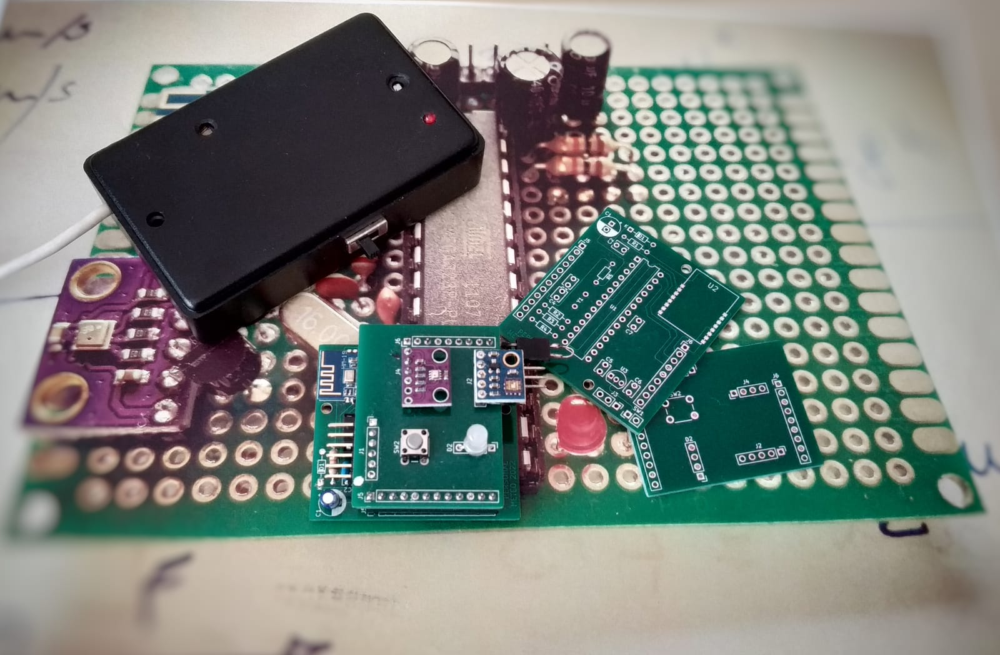
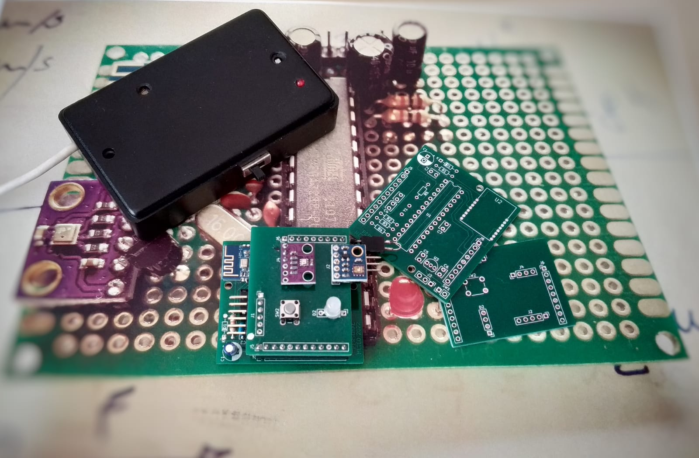

Wellbeing Intelligent Supportive pendant for Elder (WISE)
WISE è un dispositivo indossabile e connesso per anziani in casa con difficoltà motorie, ipoacusia e amnesia. Esso colma una lacuna nelle tecnologie assistive attuali integrando tutte le sue funzionalità. Rileva le cadute e invia richieste di assistenza all'app del tutore. Riconosce i suoni di citofono e telefono, illuminandosi di verde o blu, e ricorda l’assunzione di farmaci ad orari impostati lampeggiando di rosso. Include anche un pulsante di emergenza per comunicazioni istantanee sull’app. Questo dispositivo è stato presentato al Maker Faire 2024 (Roma) insieme al mio team.
Personal Meteo
 

Personal Meteo è un sistema embedded progettato per creare una stazione meteo portatile in grado di monitorare parametri fondamentali come temperatura, pressione atmosferica e radiazioni UV. Il sistema è composto da due PCB: uno di controllo, che ospita il microcontrollore Atmega328p e un modulo BLE, e l'altro, una scheda che si applica direttamente al wafer, dotata dei sensori per rilevare i parametri meteo. I dati raccolti vengono inviati in tempo reale a un'app mobile sviluppata appositamente, che consente di visualizzare e monitorare i dati meteo direttamente dal proprio telefono.
LoRa Station
Questa è la prima immagine che mostra il sistema LoRa in funzione. La tecnologia LoRa permette comunicazioni a lungo raggio con un basso consumo energetico.
Qui vediamo i risultati ottenuti con il sistema LoRa, evidenziando la trasmissione efficace dei dati.
Green Automated Telemetric Entrance (GATE)

Qui vediamo i risultati ottenuti con il sistema GATE, evidenziando la trasmissione efficace dei dati.